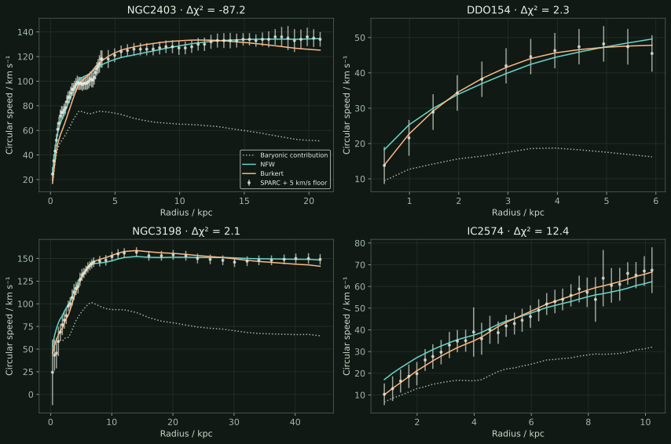
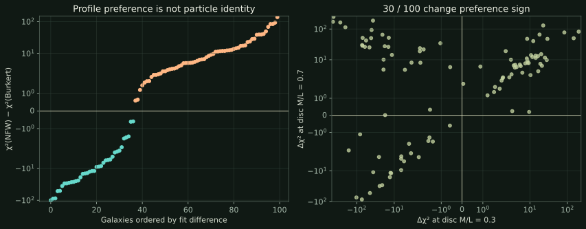
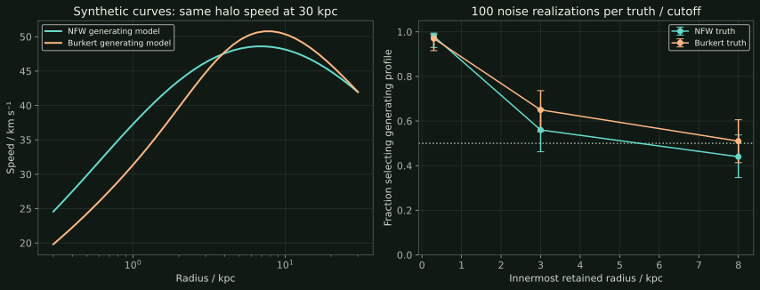

Abstract
Dark matter is well supported as a gravitational component, but its microscopic identity remains unresolved. This working paper asks a narrower question: which observations discriminate physical mechanisms, and which merely discriminate convenient fitting functions? A targeted evidence synthesis covers verified experimental and observational results available through November 13, 2026. It is paired with a new, reproducible analysis of 100 SPARC galaxies (2,742 radial measurements), using two-parameter NFW and Burkert halo profiles, and a controlled synthetic-recovery experiment. At the baseline stellar mass-to-light ratio, the cored profile has lower χ² in 63 galaxies and NFW in 37; 13 have |Δχ²| < 2. Changing the assumed disc mass-to-light ratio from 0.3 to 0.7 reverses the preference sign in 30 cases. These are conditional fit diagnostics, not evidence for a particular particle or a population-level model probability. The most informative near-term program combines recoil spectra, halo evolution, lensing populations and cosmological structure, while testing their nuisance assumptions explicitly.
1. Evidence of a missing component; uncertainty about its identity
The attractive part of the dark-matter problem is that the evidence is distributed across very different experiments. In the standard cosmological framework, microwave-background structure requires substantially more matter than baryons supply. Planck infers Ωch² = 0.120 ± 0.001 and Ωbh² = 0.0224 ± 0.0001 in its base model; these are cosmological inferences, not a chemical identification. [1] Cluster collisions offer a spatial test: in the Bullet Cluster, the lensing-inferred mass is displaced from much of the hot, X-ray-emitting gas. [2]
Galaxy rotation curves add detailed local structure. They constrain the radial gravitational field, but a circular speed is the combined effect of stars, gas and any halo. Distances, viewing geometry and non-circular motions also enter. A flexible mass model can fit a curve without revealing how its invisible component was produced. A successful explanation must address galaxies, clusters and cosmology consistently. Modified-gravity models are not tested in the numerical work below; this paper therefore does not claim to rule them out.
2. What changed recently
| Result | What it establishes | What remains open |
|---|---|---|
| LZ, September 2026 [6] | One high-energy candidate recoil; 2.6σ global significance after the look-elsewhere correction. | Independent exposure, background confirmation and repeatable spectral evidence. |
| LZ solar-neutrino analysis [7] | 4.5σ evidence consistent with boron-8 coherent neutrino scattering in 5.7 tonne-years. | No significant dark-matter excess in this low-mass search. |
| DESI + CMB, October 2026 [9] | Tighter limits on selected ultralight-axion fractions; a DESI-only hint disappears with CMB data. | Other masses, couplings and production histories remain different hypotheses. |
| SIDM lensing work, 2026 [10] [11] | Simulated dense collapsed structures and a new model-dependent lensing hint. | Uniqueness, selection effects, baryonic degeneracies and independent replication. |
| Euclid, November 12, 2026 [12] | DR1-Foundation adds around 15,000 strong-lensing candidates across a much larger survey. | Candidates require vetting; a catalog is not a particle identification. |
The LZ high-energy analysis is especially interesting because it changed the search window. Its 2.84 tonne-year exposure contains one event consistent with a 248 ± 23 (statistical) ± 23 (systematic) keV nuclear recoil. The maximum local significance is 3.4σ; accounting for the tested alternatives reduces it to 2.6σ globally. That statistic quantifies tension with a specified background model. It is not the probability that dark matter caused the event. The result remains a preprint in the source inspected here. [6]
A different LZ analysis finds solar-neutrino scattering, an expected physical signal that increasingly overlaps low-energy dark-matter searches. It demonstrates sensitivity while making the background problem more demanding; it is not a dark-matter detection or an absolute barrier to progress. [7] Independently, XENONnT finds no significant excess in 3.1 tonne-years and reports a 90% confidence upper limit of 1.7 × 10⁻⁴⁷ cm² at a 30 GeV/c² WIMP mass for its specified spin-independent elastic model. That limit cannot be averaged with the LZ high-energy anomaly as though they measured one common effect. [8]
3. Three mechanisms worth following
Particles with more than one accessible state. A dark sector can contain a ground state and an excited state. Scattering that absorbs or releases an internal energy splitting changes the recoil spectrum, so the lowest-energy window need not be the most informative one. Fan and colleagues explore endothermic and exothermic interpretations of the LZ high-energy event and the constraints from other searches. Their ability to construct such a model is interesting; it does not establish that the event came from it. [18]
Elastic scattering: χ + N → χ + N Inelastic scattering: χ₁ + N → χ₂ + N, with δ = m₂ − m₁
Production history is a separate axis. In thermal freeze-out, initially equilibrated particles stop annihilating efficiently as the Universe expands. In freeze-in, the coupling is so weak that the dark component never equilibrates and is gradually populated by rare processes. Hall and colleagues provide a primary construction of the latter. Neither mechanism determines a unique present-day detection rate without additional assumptions. [16]
Self-interactions that change halos over time. Elastic collisions redistribute energy inside a dark halo. Early inward heat flow can produce a low-density core; later outward heat transport can drive gravothermal collapse into a dense central structure. This makes the slogan “self-interactions produce cores” incomplete. Simulations show that orbital evolution, tides and stellar response can broaden the resulting population. [14] Recent lensing-oriented simulations explicitly connect projected density and enclosed mass to expansion and collapse phases. [10]
A late-October preprint analyzes 29 quadruply imaged quasars and reports a preference for core-collapsed halos within a particular self-interacting model. Only its official abstract was available to this review; its detailed likelihood and systematics have not been independently audited here. It is retained as a provisional pointer, not as a quantitative input to our computation. [11] Numerical approximations also matter: kinetic calculations find departures from local thermal equilibrium that can alter late-collapse behavior. [15]
Fields whose wavelength becomes astrophysical. A coherent bosonic field can act as matter after it begins oscillating in its potential; misalignment is an early-Universe production mechanism. [20] For sufficiently small mass, wave effects modify clustering on observable scales. In the 2026 DESI-plus-CMB analysis, an ultralight component around 10⁻²⁹ eV is constrained to roughly 0.3% of total matter density. A mild DESI-only preference near 10⁻²⁶ eV vanishes with CMB data. This does not exclude QCD axions: the tested ultralight range is enormously different from the microelectronvolt masses probed by resonant haloscopes such as ADMX. [9] [17]
4. An original test: how much does a halo fit really tell us?
We downloaded the public SPARC rotation-curve archive and metadata catalog, retained their creator attribution, and ran the accompanying Python pipeline. This is a fresh analysis of published observations, not newly collected data. Its question and sample differ from the earlier 149-galaxy multivariable SPARC pilot on this website; it is not a replication of that study. The raw archive contains 175 galaxies. We include quality flags 1 or 2, inclination at least 30°, and at least 12 rows with finite values and positive radius, observed speed and quoted error. The resulting sample has 100 galaxies and 2,742 radial measurements. Selection is documented for every parent-sample galaxy. [3]
The two halo families are a cusped NFW profile and an empirical Burkert core. Both have two fitted parameters: density scale ρ₀ and radius scale rₛ. A Burkert fit is not a simulation of self-interacting dark matter, and an unmodified NFW fit is not a complete prediction of a collisionless galaxy including baryonic feedback. [4] [5]
ρNFW(r) = ρ₀ / [x(1 + x)²] ρBurkert(r) = ρ₀ / [(1 + x)(1 + x²)] x = r / rₛ; v²halo(r) = GMhalo(<r) / r
The total circular-speed model combines the SPARC gas, unit-mass-to-light disc and bulge contributions with the halo. Negative gas velocities in the archive encode outward radial force and are kept as signed squared contributions. The baseline stellar mass-to-light ratios at 3.6 μm are 0.5 for the disc and 0.7 for the bulge. Sensitivity runs use disc values 0.3 and 0.7, with the bulge fixed to 1.4 times the disc value. Distances and inclinations remain fixed to their catalog values.
v²model = vgas |vgas| + Υdisc v²disc + Υbulge v²bulge + v²halo χ² = Σi [(vmodel,i − vobs,i) / σeff,i]² σeff,i = √(σ²quoted,i + (5 km s⁻¹)²)
The 5 km/s error term is an analyst-chosen sensitivity floor, not a measured intrinsic dispersion. A separate baseline run removes it. We fit log₁₀ρ₀ between 3 and 11 (ρ in M☉ kpc⁻³) and log₁₀rₛ between −1.5 and 2.5 (r in kpc), with four starting positions and bounded least squares. The best of the four is retained. Fits within 0.015 dex of a bound are flagged. Analytic masses are checked against direct numerical integration; noiseless curves recover their generating parameters. No cosmological mass–concentration prior is imposed.
We report Δχ² = χ²NFW − χ²Burkert. Positive values favor the cored profile under these assumptions. Because the two models have equal fitted parameter counts, their AIC difference equals this χ² difference if one adopts our independent Gaussian error model. We do not treat it as a calibrated p-value, posterior odds or a test of particle theories. The radial points share systematic uncertainties; pooling their χ² values into one discovery statistic would be misleading.
One galaxy. Two explanations of its shape.
Loading the published data and computed fits…
These controls reveal precomputed fits; they do not refit or change the data. All values are available in the downloadable JSON. Error bars include the declared 5 km/s floor.
5. Results from the observed curves

At the baseline settings, Burkert has lower χ² for 63/100 galaxies and NFW for 37/100; 13/100 lie within |Δχ²| < 2. The median Δχ² is 2.74. A lower χ² means only that one of these two conditional profiles fits better. It does not mean that the fit is acceptable in an absolute sense, that all galaxies share the same mechanism, or that halo particles self-interact.
| Disc M/L | Burkert lower χ² | NFW lower χ² | |Δχ²| < 2 |
|---|---|---|---|
| 0.3 | 47 | 53 | 17 |
| 0.5 | 63 | 37 | 13 |
| 0.7 | 77 | 23 | 15 |

30 of 100 galaxies reverse the sign of Δχ² between disc M/L = 0.3 and 0.7. In 25 baseline cases, at least one profile reaches the declared boundary proximity; their detailed halo parameters deserve particular caution. The optimizer reports 0 unsuccessful fits across the recorded observed-data configurations. Solver convergence alone does not validate the physical model. Every per-galaxy score, selection flag and fitted baseline parameter is supplied with the paper.
Removing the 5 km/s floor while keeping baseline M/L changes the count to 62/100 favoring Burkert and 38/100 favoring NFW; 3 galaxies reverse preference sign relative to the baseline floor. This makes the adopted error model a material assumption rather than a cosmetic plotting choice. Quoted errors alone give high leverage to very precise points, even when unmodeled systematics are shared across radii.
There are two reasons a core cannot identify a particle. First, feedback from ordinary matter can transfer energy to collisionless dark matter and flatten an initially cusped distribution. [13] Second, self-interactions can eventually steepen a halo through collapse. The same observed central structure can therefore arise from different histories, and the same interaction law can produce different structures. Controlled feedback experiments further suggest that collapse resilience depends on initial concentration and the imposed feedback history. [19]
6. Synthetic recovery: the experiment where we know the answer
We generated two analytic galaxy curves, one NFW and one Burkert, with the halo circular speeds matched at 30 kpc. The Burkert input is ρ₀ = 2 × 10⁷ M☉ kpc⁻³ and rₛ = 3 kpc; the NFW scale radius is 5 kpc and its density is normalized to the matched outer speed. Each uses the same fixed illustrative baryonic term, v²bar = 3200 (r/2)/(1 + r/2)², with r in kpc and v² in (km/s)². Forty radii span 0.3–30 kpc logarithmically. Independent Gaussian noise of 5 km/s is added with seed 20261113.
For each generating profile, 100 noise realizations are fitted with both profile families. Each realization is analyzed at three inner-radius cuts: 0.3, 3 and 8 kpc, keeping the same outer measurements and paired noise. Thus this test removes both inner coverage and data points; it does not isolate the effect of spatial resolution at fixed sample size. There are 600 paired profile comparisons. The displayed intervals are 95% Wilson binomial intervals for the recovery fraction under this exact synthetic design; they are not astrophysical confidence intervals.

| Generating profile | Inner radius | Correct selection | 95% interval |
|---|---|---|---|
| NFW | 0.3 kpc | 98/100 | 0.93–0.99 |
| NFW | 3 kpc | 56/100 | 0.46–0.65 |
| NFW | 8 kpc | 44/100 | 0.35–0.54 |
| Burkert | 0.3 kpc | 97/100 | 0.92–0.99 |
| Burkert | 3 kpc | 65/100 | 0.55–0.74 |
| Burkert | 8 kpc | 51/100 | 0.41–0.61 |
The useful lesson is the conditional nature of identification. Even when the two possible answers and the baryons are supplied in advance, removing informative radii can weaken discrimination. Real data add uncertain geometry, correlated errors, non-circular motion and more than two possible density families. Conversely, a clean recovery result in this controlled setting is a check on the inference procedure, not evidence that the Universe chose that model. These simulations evolve no particles and implement no heat transport or cosmological growth.
Synthetic-fit diagnostics: 0 of 600 comparisons contain an unsuccessful optimizer status; 0 contain at least one fitted profile near a parameter bound. Boundary effects are part of this declared fitting procedure and further limit extrapolation beyond this benchmark.
7. A better next experiment
The most promising connection is between mechanisms and observations that respond to different pieces of the model. Rotation curves measure the radial force in gas-rich galaxies. Strong lensing measures projected gravitational structure, including objects with few visible stars. Recoil experiments probe nongravitational interactions directly. Cosmic structure tests the influence of mass and production history over a much larger volume. Agreement across these channels would carry more weight than another excellent fit to one curve.
Euclid’s November 12 DR1-Foundation release, covering about 1,900 square degrees, reports around 15,000 strong-lensing candidates. The immediate opportunity is a well-characterized population with explicit detection and confirmation probabilities. Its novelty is scale and consistency; its release does not settle the nature of dark matter. [12]
| Next test | Primary change | Failure mode to expose |
|---|---|---|
| Galaxy model comparison | Marginalize distance, inclination and stellar M/L; include covariance and concentration priors. | A preference that disappears under realistic nuisance uncertainty. |
| Lensing population | Forward-model detection, line-of-sight structure and baryonic perturbers. | Dense inferred clumps caused by selection or a restrictive smooth lens model. |
| SIDM evolution | Simulate tides, assembly and baryons with convergence checks. | Apparent collapse driven by numerics or one imposed assembly history. |
| Direct detection follow-up | Independent exposure and targets; jointly fit spectral and timing information. | A candidate explained by a previously underrepresented background topology. |
8. Limits, provenance and reproducibility
This is a targeted evidence synthesis, not a systematic review or pooled statistical meta-analysis. Searches emphasized primary experimental papers, collaboration releases and peer-reviewed mechanism studies, with preprints labeled separately. Search terms covered LZ high-energy recoil results, solar-neutrino backgrounds, DESI ultralight axions, SIDM strong lensing, gravothermal collapse and Euclid releases. Sources were checked through November 13, 2026; coverage is selective, and absence from this review is not evidence against a candidate. Abstract-only evidence is identified in the references. Incompatible cross sections, matter fractions and lensing likelihoods were deliberately not combined into a single ranking.
The computation is exploratory and was not preregistered. The profile sample is not volume complete. Fixed stellar mass-to-light values and a chosen error floor are sensitivity settings, not inferred truths. Bounds can shape profile fits. We do not propagate distance or inclination uncertainties, model beam smearing, fit asymmetric drift, include covariance, or impose galaxy-formation priors. The four displayed galaxies are illustrative. The synthetic curves have exactly known baryons and independent noise. No result here identifies dark matter or reanalyzes LZ, DESI or Euclid raw observations.
The source package includes the exact SPARC input files, SHA-256 checksums, all 175 selection outcomes, 400 observed-data configuration rows, 600 synthetic comparison rows, fitted parameters, software versions, numerical checks, plotting code and this paper’s build script. Input observations remain the work of their original creators. SPARC’s metadata catalog lists the underlying rotation-curve publications. The manuscript, code and synthesis were prepared with AI assistance for Brandon Frank Han-Chween Huang’s open notebook; no claim is made that he personally collected these observations or that this draft has undergone peer review.
9. Conclusion
The compelling possibility is a dark sector with behavior richer than a passive invisible mass: internal particle states can alter recoil energies, self-interactions can change a halo’s evolutionary path, and very light fields can reshape cosmic structure. These are testable mechanisms, not discoveries. Our SPARC reanalysis demonstrates why a preference for a halo shape cannot close the identification problem. The next convincing step would be a mechanism that makes quantitative predictions across several probes, survives their nuisance uncertainties, and succeeds on new data.
References
- Planck Collaboration (2020). Planck 2018 results. VI. Cosmological parameters. A&A 641, A6.Peer-reviewed; foundational cosmological inference.
- Clowe et al. (2006). A direct empirical proof of the existence of dark matter. ApJL 648, L109.Peer-reviewed; cluster lensing / gas separation.
- Lelli, McGaugh & Schombert (2016). SPARC: Mass Models for 175 Disk Galaxies with Spitzer Photometry and Accurate Rotation Curves. AJ 152, 157.Peer-reviewed; observational data source, with original rotation-curve references in its catalog.
- Navarro, Frenk & White (1997). A Universal Density Profile from Hierarchical Clustering. ApJ 490, 493.Peer-reviewed; NFW profile.
- Burkert (1995). The Structure of Dark Matter Haloes in Dwarf Galaxies. ApJL 447, L25.Peer-reviewed; empirical cored profile. The profile is used here, not all historical interpretations.
- Akerib et al., LZ (2026). Search for dark matter particle interactions in an extended nuclear recoil energy window.Preprint, submitted September 2, 2026; not a dark-matter discovery.
- Akerib et al., LZ (2026). Searches for Light Dark Matter and Evidence of Coherent Elastic Neutrino-Nucleus Scattering of Solar Neutrinos. PRL 137, 091806.Peer-reviewed; 4.5σ solar-neutrino evidence, no significant dark-matter excess in this search.
- Aprile et al., XENON (2025). WIMP Dark Matter Search Using a 3.1 Tonne-Year Exposure of the XENONnT Experiment. PRL 135, 221003.Peer-reviewed; model-specific elastic-scattering limits.
- Verdiani et al. (2026). Constraints on ultralight axions from the DESI DR1 full shape, Planck, and ACT datasets. PRD 114, 083506.Peer-reviewed, October 5, 2026; mass-dependent cosmological constraints.
- Kong, Nadler & Yu (2026). Strong-lensing perturber signatures in self-interacting dark matter simulations. PRD 114, 043011.Peer-reviewed; simulation-based mechanism, not a particle detection.
- Gilman et al. (2026). Hints of self-interacting dark matter from strong gravitational lensing.October 29 preprint; abstract-level review only, full text inaccessible during this search.
- ESA (November 12, 2026). Euclid lays the foundation for its best-ever 3D map of the Universe.Official mission release; DR1-Foundation, not full DR1.
- Pontzen & Governato (2012). How supernova feedback turns dark matter cusps into cores. MNRAS 421, 3464.Peer-reviewed; baryonic-feedback mechanism.
- Zeng et al. (2025). Diversity and universality: Evolution of dwarf galaxies with self-interacting dark matter. PRD 112, 063008.Peer-reviewed; idealized simulations of stars, SIDM and orbital evolution.
- Gurian & May (2025). Core Collapse Beyond the Fluid Approximation: The Late Evolution of Self-Interacting Dark Matter Halos. PRL 135, 221001.Peer-reviewed; numerical/modeling caveat for late collapse.
- Hall et al. (2010). Freeze-In Production of FIMP Dark Matter. JHEP 03, 080.Peer-reviewed; primary production-mechanism proposal.
- ADMX Collaboration (2025). ADMX Axion Dark Matter Bounds around 3.3 μeV with Dine-Fischler-Srednicki-Zhitnitsky Discovery Ability. PRL 134, 111002.Peer-reviewed; narrow-band axion search, not all axion masses.
- Fan et al. (2026). Inelastic Dark Matter and High-Energy Recoil Signatures in LZ. Chinese Physics Letters 43, 110201.Published theoretical interpretation; does not establish the origin of the LZ event.
- Kong & Yu (2026). Gravothermal Collapse: Robust Against Baryonic Feedback.May 29 preprint; controlled, imposed-potential experiment.
- Preskill, Wise & Wilczek (1983). Cosmology of the invisible axion. Physics Letters B 120, 127.Primary axion-misalignment mechanism paper.